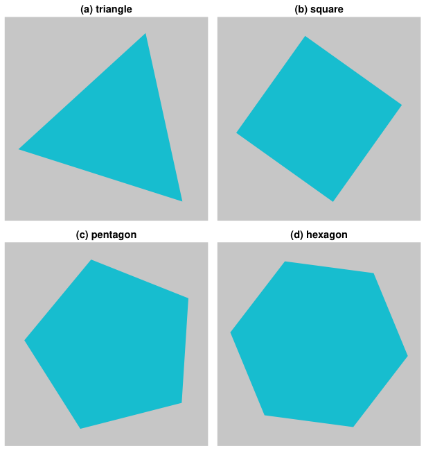

Tile PDFs¶
StepUp RepRep includes a tool to tile panels (individual PDF figures) into a composite PDF figure.
The tiling code is based on the script protocol in StepUp Core, which is explained in the StepUp Core “Getting Started” tutorials.
This tutorial provides a simple example that you can use as a starting point.
For a more advanced example, see the
tile_pdf test case
in the StepUp RepRep unit test suite.
Example¶
Example source files: advanced_topics/tile_pdfs/
Create a tile.py script with the following code:
#!/usr/bin/env python3
from stepup.core.script import driver
from stepup.reprep.tile_pdf import Figure, Panel
FIGURE = Figure(
"figure.pdf",
[
Panel(0, 0, "(a) triangle", "triangle.pdf"),
Panel(0, 1, "(b) square", "square.pdf"),
Panel(1, 0, "(c) pentagon", "pentagon.pdf"),
Panel(1, 1, "(d) hexagon", "hexagon.pdf"),
],
)
if __name__ == "__main__":
driver(FIGURE)
Next, create a script plan.py as follows:
#!/usr/bin/env python3
from stepup.core.api import glob, script, static
from stepup.reprep.api import convert_pdf_png, convert_svg_pdf
for path_svg in glob("*.svg"):
convert_svg_pdf(path_svg)
static("tile.py")
script("tile.py")
convert_pdf_png("figure.pdf", resolution=150)
For this example to work, you also need to create four SVG figures of the same size:
triangle.svg, square.svg, pentagon.svg and hexagon.svg.
To run the example, make the scripts executable and run StepUp:
You should see the following terminal output:
DIRECTOR │ Listening on /tmp/stepup-########/director
PHASE │ run
DIRECTOR │ Launched worker 0
START │ ./plan.py
SUCCESS │ ./plan.py
START │ python -m stepup.reprep.convert_inkscape hexagon.svg hexagon.pdf
SUCCESS │ python -m stepup.reprep.convert_inkscape hexagon.svg hexagon.pdf
START │ inkscape hexagon.svg --export-filename=hexagon.pdf --export-type=pdf
SUCCESS │ inkscape hexagon.svg --export-filename=hexagon.pdf --export-type=pdf
START │ python -m stepup.reprep.convert_inkscape pentagon.svg pentagon.pdf
SUCCESS │ python -m stepup.reprep.convert_inkscape pentagon.svg pentagon.pdf
START │ inkscape pentagon.svg --export-filename=pentagon.pdf --export-type=pdf
SUCCESS │ inkscape pentagon.svg --export-filename=pentagon.pdf --export-type=pdf
START │ python -m stepup.reprep.convert_inkscape square.svg square.pdf
SUCCESS │ python -m stepup.reprep.convert_inkscape square.svg square.pdf
START │ inkscape square.svg --export-filename=square.pdf --export-type=pdf
SUCCESS │ inkscape square.svg --export-filename=square.pdf --export-type=pdf
START │ python -m stepup.reprep.convert_inkscape triangle.svg triangle.pdf
SUCCESS │ python -m stepup.reprep.convert_inkscape triangle.svg triangle.pdf
START │ inkscape triangle.svg --export-filename=triangle.pdf --export-type=pdf
SUCCESS │ inkscape triangle.svg --export-filename=triangle.pdf --export-type=pdf
START │ ./tile.py plan
SUCCESS │ ./tile.py plan
START │ ./tile.py run
SUCCESS │ ./tile.py run
START │ mutool draw -q -o figure.png -r 150 figure.pdf
SUCCESS │ mutool draw -q -o figure.png -r 150 figure.pdf
WORKFLOW │ Dumped to .stepup/workflow.mpk.xz
PHASE │ watch
DIRECTOR │ Stopping workers.
DIRECTOR │ See you!
This is the PNG conversion of the resulting PDF figure:
